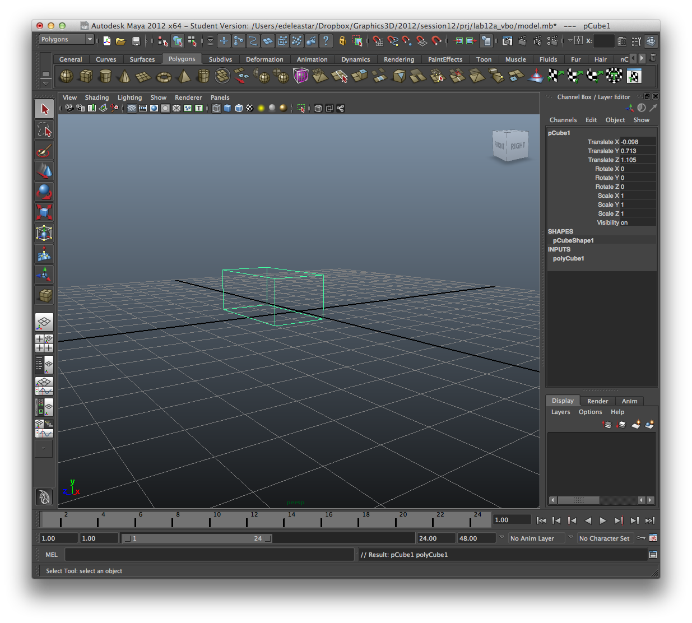
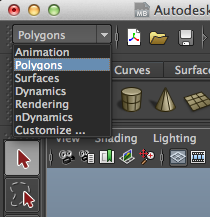
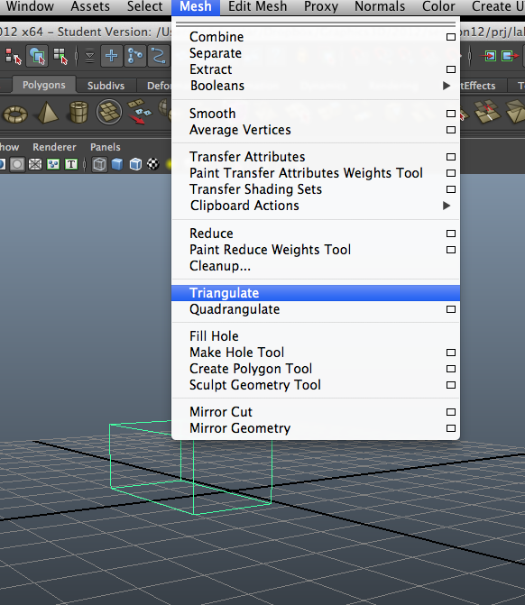
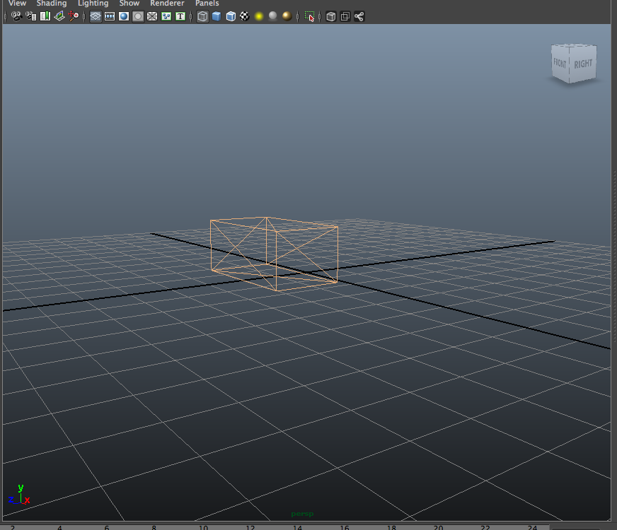

Factor out the current Geometry class into an abstract base class and an ImmediateGeometry that encapsulates current functionality
Derive a new class - VaGeometry - which uses Vertex Arrays
Derive another class - ElementGeometry - which uses indexed Vertex Arrays
Derive a class from ElementGeometry called VboGeometry which employs Vertex Buffer Objects
Instrument all of these classes to track number of vertices rendered
Use the solution to lab11b, or clone this project here:
..and call it lab12c_vbo
//typedef std::map <std::string, Geometry> GeometryMap;
typedef boost::ptr_map <std::string, Geometry> GeometryMap;
virtual void render()=0;
virtual void extractVertices()=0;
///extractVertices();
#pragma once
#include "geometry.h"
struct ImmediateGeometry : public Geometry
{
ImmediateGeometry();
ImmediateGeometry(std::string name, std::istream&, VertexGroup*);
void render();
void extractVertices();
};
#include "immediategeometry.h"
using namespace std;
ImmediateGeometry::ImmediateGeometry()
{
}
ImmediateGeometry::ImmediateGeometry(string groupName, istream& is, VertexGroup*group)
: Geometry (groupName, is, group)
{
}
void ImmediateGeometry::render()
{
foreach (Face &face, faces)
{
face.render(vertices);
}
}
void ImmediateGeometry::extractVertices()
{
int newIndex=0;
foreach (Face &face, faces)
{
vector<int> groupIndices = face.vertexIndices;
face.vertexIndices.clear();
foreach (int index, groupIndices)
{
Vector3 vertex(vertexGroup->vertices[index-1].X, vertexGroup->vertices[index-1].Y, vertexGroup->vertices[index-1].Z);
vertices.push_back(vertex);
face.vertexIndices.push_back(newIndex);
newIndex++;
}
}
}
The signatures of the SphereActor constructor will change - as the geometry map is now a map of pointers (not references).
In AnimateScene::loadActor change the following:
Actor* AnimateScene::loadActor(GeometryMap::value_type &value)
{
//...
//PhysicsActor * sphere = new SphereActor(&value.second);
PhysicsActor * sphere = new SphereActor(value.second);
// ...
//actor = new SphereActor(&value.second);
actor = new SphereActor(value.second);
//...
}
void Scene::loadActors(Model*model)
{
//...
//foreach (GeometryMap::value_type &value, model->entities)
foreach (GeometryMap::value_type value, model->entities)
//...
}
Actor* Scene::loadActor(GeometryMap::value_type &value)
{
//return new Actor(&value.second);
return new Actor(value.second);
}
void Model::render()
{
//foreach (GeometryMap::value_type &value, entities)
//{
// value.second.render();
//}
foreach (GeometryMap::value_type value, entities)
{
value.second->render();
}
}
//Geometry a(name, is, &defaultGroup);
//if (entities.find(a.name) == entities.end())
//{
// entities[a.name] = a;
//}
Geometry *geometry = new ImmediateGeometry(name, is, &defaultGroup);
geometry->extractVertices();
if (entities.find(geometry->name) == entities.end())
{
entities.insert(geometry->name, geometry);
}
Before we move away form immediate mode, we need to make some adjustments to our models.
The default in Maya is to use a combination of quads and triangles. For a simple cube:

g default
v -1.817879 0.000000 2.020566
v 1.621435 0.000000 2.020566
v -1.817879 1.425117 2.020566
v 1.621435 1.425117 2.020566
v -1.817879 1.425117 0.190042
v 1.621435 1.425117 0.190042
v -1.817879 0.000000 0.190042
v 1.621435 0.000000 0.190042
vt 0.375000 0.000000
vt 0.625000 0.000000
vt 0.375000 0.250000
vt 0.625000 0.250000
vt 0.375000 0.500000
vt 0.625000 0.500000
vt 0.375000 0.750000
vt 0.625000 0.750000
vt 0.375000 1.000000
vt 0.625000 1.000000
vt 0.875000 0.000000
vt 0.875000 0.250000
vt 0.125000 0.000000
vt 0.125000 0.250000
g pCube1
f 1/1 2/2 4/4 3/3
f 3/3 4/4 6/6 5/5
f 5/5 6/6 8/8 7/7
f 7/7 8/8 2/10 1/9
f 2/2 8/11 6/12 4/4
f 7/13 1/1 3/3 5/14
If we wish to use alternatives to immediate mode, we will require that all geometry is constructed using triangles only.
Maya can be persuaded to 'triangulate' a model. To this, select "Polygons" in the top left:



g default
v -1.817879 0.000000 2.020566
v 1.621435 0.000000 2.020566
v -1.817879 1.425117 2.020566
v 1.621435 1.425117 2.020566
v -1.817879 1.425117 0.190042
v 1.621435 1.425117 0.190042
v -1.817879 0.000000 0.190042
v 1.621435 0.000000 0.190042
vt 0.375000 0.000000
vt 0.625000 0.000000
vt 0.375000 0.250000
vt 0.625000 0.250000
vt 0.375000 0.500000
vt 0.625000 0.500000
vt 0.375000 0.750000
vt 0.625000 0.750000
vt 0.375000 1.000000
vt 0.625000 1.000000
vt 0.875000 0.000000
vt 0.875000 0.250000
vt 0.125000 0.000000
vt 0.125000 0.250000
g pCube1
f 1/1 2/2 3/3
f 3/3 2/2 4/4
f 3/3 4/4 5/5
f 5/5 4/4 6/6
f 5/5 6/6 7/7
f 7/7 6/6 8/8
f 7/7 8/8 1/9
f 1/9 8/8 2/10
f 2/2 8/11 4/4
f 4/4 8/11 6/12
f 7/13 1/1 5/14
f 5/14 1/1 3/3
#pragma once
#include "geometry.h"
struct VaGeometry : public Geometry
{
std::vector<float> rawVertices;
VaGeometry();
VaGeometry(std::string name, std::istream&, VertexGroup*);
void render();
void extractVertices();
};
#include "VaGeometry.h"
using namespace std;
VaGeometry::VaGeometry()
{
}
VaGeometry::VaGeometry(string groupName, istream& is, VertexGroup*group)
: Geometry (groupName, is, group)
{
}
void VaGeometry::render()
{
glEnableClientState(GL_VERTEX_ARRAY);
glVertexPointer(3, GL_FLOAT, 0, &rawVertices[0]);
glDrawArrays(GL_TRIANGLES, 0, rawVertices.size()/3);
glDisableClientState(GL_VERTEX_ARRAY);
}
void VaGeometry::extractVertices()
{
foreach (Face &face, faces)
{
foreach (int index, face.vertexIndices)
{
Vector3 vertex(vertexGroup->vertices[index-1].X, vertexGroup->vertices[index-1].Y, vertexGroup->vertices[index-1].Z);
rawVertices.push_back(vertex.X);
rawVertices.push_back(vertex.Y);
rawVertices.push_back(vertex.Z);
}
}
}
//Geometry *geometry = new ImmediateGeometry(name, is, &defaultGroup);
Geometry *geometry = new VaGeometry(name, is, &defaultGroup);
For test purposes, use this model here. They have already been triangulated (check this).
We will introduce some instrumentation into the rendering - so we can keep track of the number of vertices being rendered.
Into the end of extractVertices, place the following code fragment:
static int totalVertices = 0;
totalVertices += rawVertices.size();
cout << "Vertices for " << name << ':' << rawVertices.size() << endl;
cout << "total vertices to date: " << totalVertices << endl;
Vertices for pCube1:108
total vertices to date: 108
Vertices for pSphere1:6840
total vertices to date: 6948
Vertices for pTorus1:7200
total vertices to date: 14148
static int totalVertices = 0;
totalVertices += rawVertices.size();
cout << "Vertices for " << name << ':' << rawVertices.size() << endl;
cout << "total vertices to date: " << totalVertices << endl;
Vertices for pCube1:36
total vertices to date: 36
Vertices for pSphere1:2280
total vertices to date: 2316
Vertices for pTorus1:2400
total vertices to date: 4716
#pragma once
#include "geometry.h"
struct Elements
{
std::vector<float> vertices;
std::vector<GLushort> indices;
};
struct ElementGeometry : public Geometry
{
Elements elements;
ElementGeometry();
ElementGeometry(std::string name, std::istream&, VertexGroup*);
void render();
void extractVertices();
};
#include "elementgeometry.h"
using namespace std;
ElementGeometry::ElementGeometry()
{
}
ElementGeometry::ElementGeometry(string groupName, istream& is, VertexGroup*group)
: Geometry (groupName, is, group)
{
}
void ElementGeometry::render()
{
glEnableClientState(GL_VERTEX_ARRAY);
glVertexPointer(3, GL_FLOAT, 0, &elements.vertices[0]);
glDrawElements(GL_TRIANGLES, elements.indices.size(), GL_UNSIGNED_SHORT, &elements.indices[0]);
glDisableClientState(GL_VERTEX_ARRAY);
}
void ElementGeometry::extractVertices()
{
typedef map <GLushort,GLushort> IndexMap;
IndexMap indexMap;
int newIndex=0;
foreach (Face &face, faces)
{
foreach (int index, face.vertexIndices)
{
Vector3 vertex(vertexGroup->vertices[index-1].X, vertexGroup->vertices[index-1].Y, vertexGroup->vertices[index-1].Z);
if (indexMap.find(index) == indexMap.end())
{
indexMap[index] = newIndex;
elements.vertices.push_back(vertex.X);
elements.vertices.push_back(vertex.Y);
elements.vertices.push_back(vertex.Z);
elements.indices.push_back(newIndex);
newIndex++;
}
else
{
elements.indices.push_back(indexMap[index]);
}
}
}
static int totalVertices = 0;
totalVertices += elements.vertices.size();
cout << "Vertices for " << name << ':' << elements.vertices.size() << endl;
cout << "total vertices to date: " << totalVertices << endl;
}
Vertices for pCube1:24
total vertices to date: 24
Vertices for pSphere1:1146
total vertices to date: 1170
Vertices for pTorus1:1200
total vertices to date: 2370
total vertices to date: 4716
total vertices to date: 14148
#pragma once
#include "elementgeometry.h"
struct VboGeometry : public ElementGeometry
{
GLuint ids[2];
VboGeometry();
VboGeometry(std::string name, std::istream&, VertexGroup*);
void render();
void extractVertices();
};
#include "VboGeometry.h"
using namespace std;
VboGeometry::VboGeometry()
{
}
VboGeometry::VboGeometry(string groupName, istream& is, VertexGroup*group)
: ElementGeometry (groupName, is, group)
{
}
void VboGeometry::render()
{
glBindBufferARB(GL_ARRAY_BUFFER, ids[0]);
glBindBufferARB(GL_ELEMENT_ARRAY_BUFFER, ids[1]);
glEnableClientState(GL_VERTEX_ARRAY);
glVertexPointer(3, GL_FLOAT, 0, 0);
glDrawElements(GL_TRIANGLES, elements.indices.size(), GL_UNSIGNED_SHORT, 0);
glDisableClientState(GL_VERTEX_ARRAY);
glBindBuffer(GL_ARRAY_BUFFER, 0);
glBindBuffer(GL_ELEMENT_ARRAY_BUFFER, 0);
}
void VboGeometry::extractVertices()
{
ElementGeometry::extractVertices();
glGenBuffers(2, ids);
glBindBuffer(GL_ARRAY_BUFFER, ids[0]);
glBufferData(GL_ARRAY_BUFFER, elements.vertices.size()*sizeof(float), &elements.vertices[0], GL_STATIC_DRAW);
glBindBuffer(GL_ELEMENT_ARRAY_BUFFER, ids[1]);
glBufferData(GL_ELEMENT_ARRAY_BUFFER, elements.indices.size()*sizeof(GLushort), &elements.indices[0], GL_STATIC_DRAW);
}
Build and test
As it is using the ElementGeometry class, its metrics are the same.
What impact does using the VBO classes have on our physics simulation?
Currently, you will note that the Physics classes use Geometry->vertices
Are these still relevant for VboGeometry?
If changes are made to these vertices - do they have any effect on the rendering?